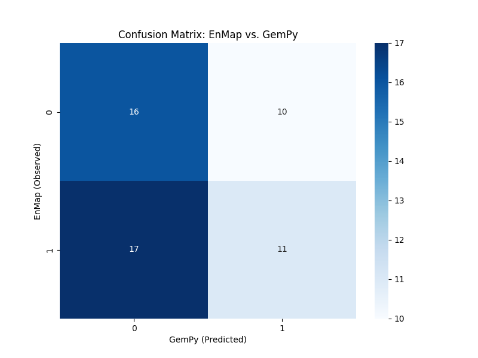
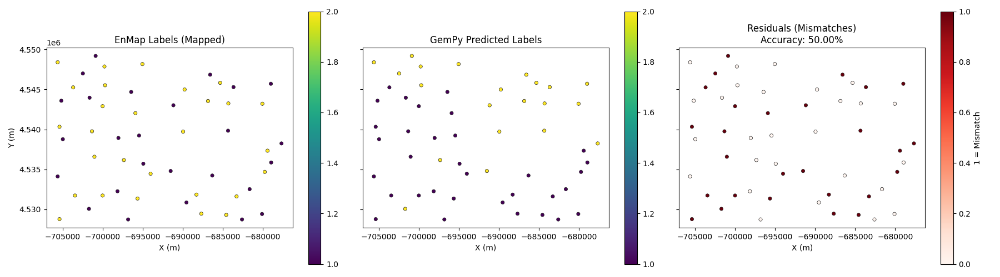

Note
Go to the end to download the full example code.
EnMap Likelihood and Model Comparison¶
This example demonstrates how to compare a 3D geological model’s predictions with lithological labels extracted from EnMap hyperspectral data.
Overview
Once we have a 3D geological model and surface lithological information (from EnMap), we can evaluate how well the model honors the surface observations. This comparison is essential for:
Model Validation: Quantifying the accuracy of the geological interpretation at the surface.
Likelihood Definition: Defining a misfit function for probabilistic inversions.
Residual Analysis: Identifying areas where the geological model fails to explain surface data.
Workflow
Load the EnMap extracted points (see Example 02).
Set these points as a custom_grid in the GemPy model.
Compute the model to get predicted labels at these locations.
Map EnMap class IDs to GemPy lithology IDs.
Calculate accuracy and visualize residuals.
Import Libraries¶
import os
import numpy as np
import matplotlib.pyplot as plt
import gempy as gp
import gempy_viewer as gpv
from mineye.config import paths
# Set random seed for reproducibility
np.random.seed(1234)
Load Model and Data¶
We use the Tharsis geological model and the EnMap points extracted in the previous step.
# 1. Define Model Extent
extent = [-707521, -675558, 4526832, 4551949, -500, 505]
# 2. Get Data Paths
mod_or_path = paths.get_orientations_path()
mod_pts_path = paths.get_points_path()
topo_path = paths.get_topography_path()
# 3. Create GemPy Model
simple_geo_model = gp.create_geomodel(
project_name='enmap_comparison',
extent=extent,
refinement=5,
importer_helper=gp.data.ImporterHelper(
path_to_orientations=mod_or_path,
path_to_surface_points=mod_pts_path,
)
)
gp.map_stack_to_surfaces(
gempy_model=simple_geo_model,
mapping_object={
"Tournaisian_Plutonites": ["Tournaisian Plutonites"],
}
)
# Set topography
gp.set_topography_from_file(grid=simple_geo_model.grid, filepath=topo_path)
Active grids: GridTypes.OCTREE|TOPOGRAPHY|NONE
Topography(_regular_grid=RegularGrid(resolution=array([1024, 800, 32]), extent=array([-7.075210e+05, -6.755580e+05, 4.526832e+06, 4.551949e+06,
-5.000000e+02, 5.050000e+02]), values=array([[-7.07505393e+05, 4.52684770e+06, -4.84296875e+02],
[-7.07505393e+05, 4.52684770e+06, -4.52890625e+02],
[-7.07505393e+05, 4.52684770e+06, -4.21484375e+02],
...,
[-6.75573607e+05, 4.55193330e+06, 4.26484375e+02],
[-6.75573607e+05, 4.55193330e+06, 4.57890625e+02],
[-6.75573607e+05, 4.55193330e+06, 4.89296875e+02]],
shape=(26214400, 3)), mask_topo=array([], shape=(0, 3), dtype=bool), _transform=None, _base_resolution=array([64, 50, 2])), values_2d=array([[[-709535.90375109, 4518402.34748402, nan],
[-709535.90375109, 4518731.63425205, nan],
[-709535.90375109, 4519060.92102008, nan],
...,
[-709535.90375109, 4557587.47287992, nan],
[-709535.90375109, 4557916.75964795, nan],
[-709535.90375109, 4558246.04641598, nan]],
[[-709230.78325328, 4518402.34748402, nan],
[-709230.78325328, 4518731.63425205, nan],
[-709230.78325328, 4519060.92102008, nan],
...,
[-709230.78325328, 4557587.47287992, nan],
[-709230.78325328, 4557916.75964795, nan],
[-709230.78325328, 4558246.04641598, nan]],
[[-708925.66275547, 4518402.34748402, nan],
[-708925.66275547, 4518731.63425205, nan],
[-708925.66275547, 4519060.92102008, nan],
...,
[-708925.66275547, 4557587.47287992, nan],
[-708925.66275547, 4557916.75964795, nan],
[-708925.66275547, 4558246.04641598, nan]],
...,
[[-668649.75704453, 4518402.34748402, nan],
[-668649.75704453, 4518731.63425205, nan],
[-668649.75704453, 4519060.92102008, nan],
...,
[-668649.75704453, 4557587.47287992, nan],
[-668649.75704453, 4557916.75964795, nan],
[-668649.75704453, 4558246.04641598, nan]],
[[-668344.63654672, 4518402.34748402, nan],
[-668344.63654672, 4518731.63425205, nan],
[-668344.63654672, 4519060.92102008, nan],
...,
[-668344.63654672, 4557587.47287992, nan],
[-668344.63654672, 4557916.75964795, nan],
[-668344.63654672, 4558246.04641598, nan]],
[[-668039.51604891, 4518402.34748402, nan],
[-668039.51604891, 4518731.63425205, nan],
[-668039.51604891, 4519060.92102008, nan],
...,
[-668039.51604891, 4557587.47287992, nan],
[-668039.51604891, 4557916.75964795, nan],
[-668039.51604891, 4558246.04641598, nan]]],
shape=(137, 122, 3)), source=None, values=array([[-709535.90375109, 4518402.34748402, nan],
[-709535.90375109, 4518731.63425205, nan],
[-709535.90375109, 4519060.92102008, nan],
...,
[-668039.51604891, 4557587.47287992, nan],
[-668039.51604891, 4557916.75964795, nan],
[-668039.51604891, 4558246.04641598, nan]],
shape=(16714, 3)), resolution=(137, 122), raster_shape=())
Load EnMap Extracted Data¶
For this example, we assume central points have been extracted. We define a helper function to extract these points from the EnMap results.
import rasterio
from rasterio.windows import from_bounds
def extract_points_central_reduced(raster_path, extent, min_distance=25, topo_path=None):
"""Extract points from the center of bodies using distance transform."""
from skimage.segmentation import find_boundaries
from skimage.feature import peak_local_max
from scipy import ndimage
with rasterio.open(raster_path) as src:
left, right, bottom, top = extent[0], extent[1], extent[2], extent[3]
window = from_bounds(left, bottom, right, top, src.transform)
data = src.read(1, window=window)
transform = src.window_transform(window)
data_mapped = data.copy()
mask_nan = np.isnan(data)
data_mapped[data_mapped == 3] = 0
data_temp = data_mapped.copy()
data_temp[mask_nan] = 255
boundaries = find_boundaries(data_temp, mode='thick')
dist_mask = ~boundaries & ~mask_nan
dist_transform = ndimage.distance_transform_edt(dist_mask)
unique_labels = np.unique(data_mapped)
unique_labels = unique_labels[~np.isnan(unique_labels) & (unique_labels != 1)]
all_ii, all_jj, all_labels = [], [], []
for label_val in unique_labels:
mask = (data_mapped == label_val)
peaks = peak_local_max(dist_transform, min_distance=min_distance, labels=mask)
if len(peaks) > 0:
all_ii.extend(peaks[:, 0]); all_jj.extend(peaks[:, 1])
all_labels.extend([label_val] * len(peaks))
ii, jj = np.array(all_ii), np.array(all_jj)
xs, ys = rasterio.transform.xy(transform, ii.tolist(), jj.tolist())
if topo_path:
with rasterio.open(topo_path) as topo_src:
zs = np.array([val[0] for val in topo_src.sample(zip(xs, ys))])
else:
zs = np.full_like(xs, extent[5])
return np.column_stack((xs, ys, zs)), np.array(all_labels)
base_dir = paths.get_base_dir()
enmap_path = os.path.join(base_dir, 'examples', 'Data', 'Segmentation_Input_Data', 'Enmap', 'EPSG3857_EnMap_result_n4_betajump0.1.tif')
print("Extracting EnMap points for comparison...")
xyz_central, labels_enmap = extract_points_central_reduced(enmap_path, extent, min_distance=50, topo_path=topo_path)
print(f"Loaded {len(xyz_central)} points from EnMap extraction.")
Extracting EnMap points for comparison...
Loaded 54 points from EnMap extraction.
Compute Model on Custom Grid¶
We set the EnMap point locations as a custom grid to evaluate the model exactly at those points.
# 1. Set custom grid
gp.set_custom_grid(simple_geo_model.grid, xyz_central)
# 2. Compute model
gp.compute_model(simple_geo_model)
# 3. Get GemPy predicted labels at custom grid points
# These are stored in solutions.raw_arrays.custom
labels_gempy = simple_geo_model.solutions.raw_arrays.custom.astype(int)
Active grids: GridTypes.OCTREE|CUSTOM|TOPOGRAPHY|NONE
Setting Backend To: AvailableBackends.PYTORCH
/home/leguark/.venv/2025/lib/python3.13/site-packages/torch/utils/_device.py:116: UserWarning: To copy construct from a tensor, it is recommended to use sourceTensor.detach().clone() or sourceTensor.detach().clone().requires_grad_(True), rather than torch.tensor(sourceTensor).
return func(*args, **kwargs)
Label Mapping and Accuracy¶
EnMap and GemPy use different ID systems. We must map them to compare results.
Automated Best Mapping
Since the class IDs from unsupervised segmentation don’t necessarily match GemPy’s lithology IDs, we use an automated “best mapping” logic that finds the permutation of IDs that maximizes the agreement between the two datasets.
from itertools import permutations
def find_best_mapping(observed_labels, predicted_labels):
obs_unique = np.unique(observed_labels)
pred_unique = np.unique(predicted_labels)
best_acc = -1
best_map = {}
# Try all permutations of mapping observed labels to predicted labels
for p in permutations(pred_unique, len(obs_unique)):
mapping = dict(zip(obs_unique, p))
mapped = np.vectorize(mapping.get)(observed_labels)
acc = np.mean(mapped == predicted_labels)
if acc > best_acc:
best_acc = acc
best_map = mapping
return best_map, best_acc
best_mapping, best_accuracy = find_best_mapping(labels_enmap, labels_gempy)
mapped_enmap_labels = np.vectorize(best_mapping.get)(labels_enmap)
# Calculate residuals (where labels don't match)
residuals = (mapped_enmap_labels != labels_gempy)
print(f"Best automated mapping found: {best_mapping}")
print(f"Overall Accuracy: {best_accuracy:.2%}")
Best automated mapping found: {np.uint8(0): np.int64(1), np.uint8(2): np.int64(2)}
Overall Accuracy: 50.00%
Performance Metrics: Confusion Matrix
A confusion matrix provides a detailed breakdown of which geological units are being misclassified.
from sklearn.metrics import confusion_matrix, classification_report
import seaborn as sns
cm = confusion_matrix(mapped_enmap_labels, labels_gempy)
plt.figure(figsize=(8, 6))
sns.heatmap(cm, annot=True, fmt='d', cmap='Blues')
plt.xlabel('GemPy (Predicted)')
plt.ylabel('EnMap (Observed)')
plt.title('Confusion Matrix: EnMap vs. GemPy')
plt.show()
print("\nClassification Report:")
print(classification_report(mapped_enmap_labels, labels_gempy))

Classification Report:
precision recall f1-score support
1 0.48 0.62 0.54 26
2 0.52 0.39 0.45 28
accuracy 0.50 54
macro avg 0.50 0.50 0.50 54
weighted avg 0.51 0.50 0.49 54
Visualization¶
x, y = xyz_central[:, 0], xyz_central[:, 1]
fig, axes = plt.subplots(1, 3, figsize=(18, 5), sharex=True, sharey=True)
# Plot EnMap Labels (Mapped)
sc0 = axes[0].scatter(x, y, c=mapped_enmap_labels, cmap='viridis', s=20, edgecolors='k', linewidth=0.5)
axes[0].set_title('EnMap Labels (Mapped)')
plt.colorbar(sc0, ax=axes[0])
# Plot GemPy Labels
sc1 = axes[1].scatter(x, y, c=labels_gempy, cmap='viridis', s=20, edgecolors='k', linewidth=0.5)
axes[1].set_title('GemPy Predicted Labels')
plt.colorbar(sc1, ax=axes[1])
# Plot Residuals
sc2 = axes[2].scatter(x, y, c=residuals, cmap='Reds', s=20, edgecolors='k', linewidth=0.5)
axes[2].set_title(f'Residuals (Mismatches)\nAccuracy: {best_accuracy:.2%}')
plt.colorbar(sc2, ax=axes[2], label='1 = Mismatch')
for ax in axes:
ax.set_aspect('equal')
ax.set_xlabel('X (m)')
axes[0].set_ylabel('Y (m)')
plt.tight_layout()
plt.show()

Total running time of the script: (0 minutes 4.199 seconds)